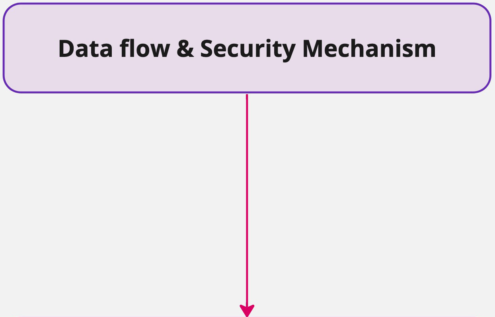
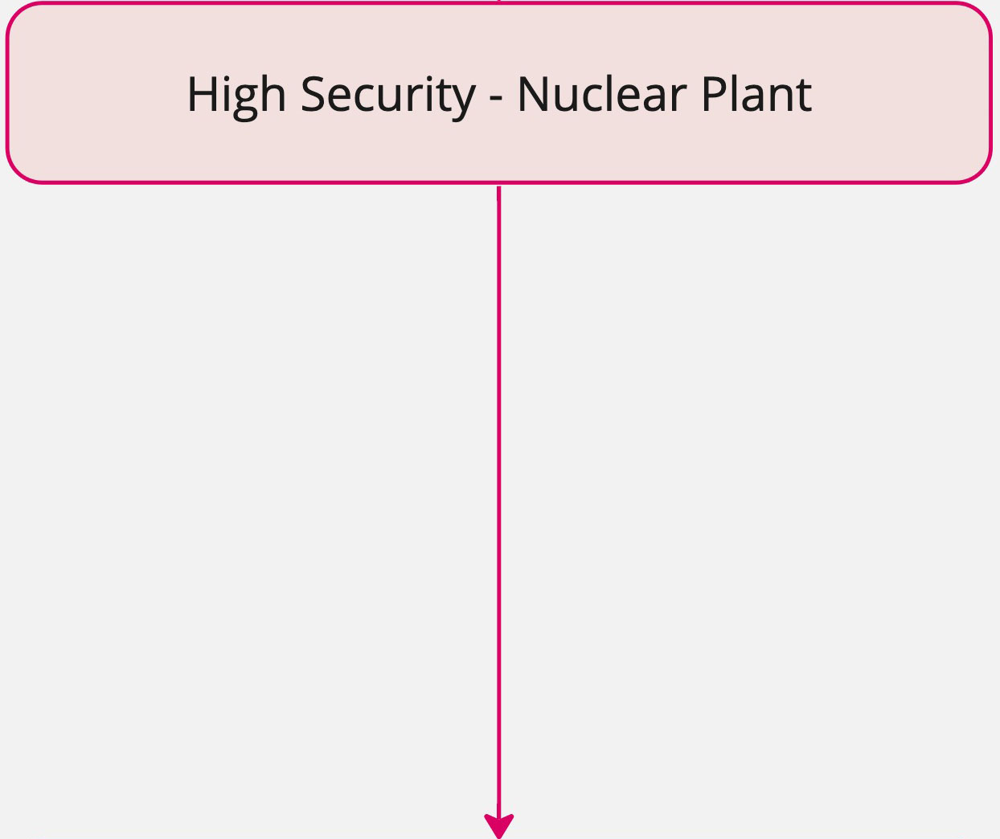
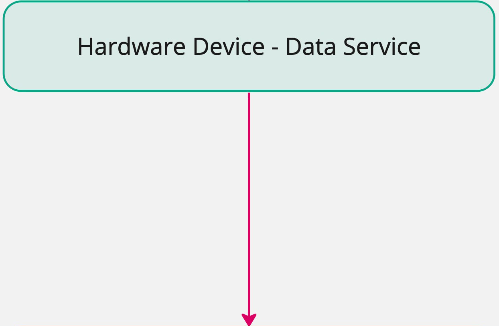
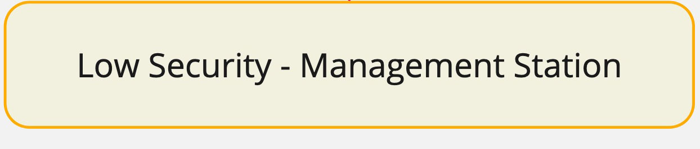
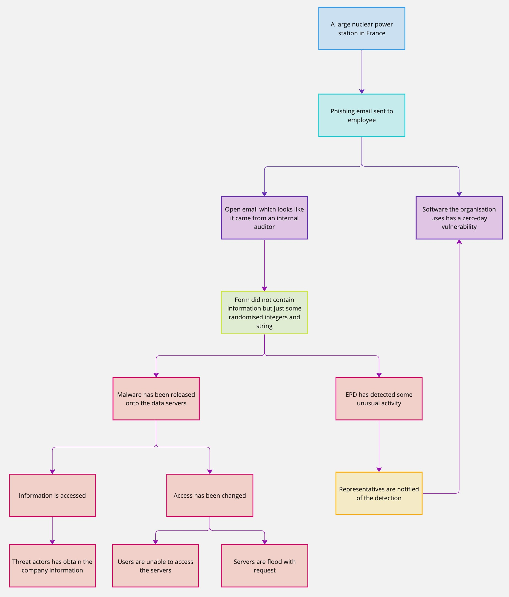

Introduction
The STRIDE method is a threat modeling framework commonly used in cybersecurity to identify and classify potential threats in a systematic manner. Developed by Praerit Garg and Loren Kohnfelder at Microsoft, the STRIDE acronym stands for Spoofing, Tampering, Repudiation, Information Disclosure, Denial of Service, and Elevation of Privilege. By utilising this framework, organisations can effectively assess and mitigate risks associated with software and system vulnerabilities (Shostack, 2014).
To fully grasp the intricate workings of a nuclear power station, it is imperative to deconstruct it into its components. This may entail analysing its reactors, cooling systems, control mechanisms, and physical security measures. For this exercise, we will focus on gaining entry to its control system.
It is important to note that nuclear plants are characterised by intricate structures that employ the most advanced and rigorous security measures. The preceding discussion is merely an illustrative example of analyses conducted on a threat model.
 Nuclear power plants employ a defence-in-depth strategy to ensure protection against cyber attacks. This strategy involves using a hardware device that permits data to move solely from high-security to low-security zones (Cisa.gov, 2024).
 High-security nuclear industrial control systems are paramount to the safety and security of nuclear power plants. These systems are a critical layer of protection against various potential hazards, including equipment malfunctions, cyber attacks, and radiation leaks. Given the potentially catastrophic consequences of such hazards, these systems' development, maintenance, and improvement must be prioritised and given due attention. Only through sustained investment in these essential systems can we ensure the long-term safety and security of our nuclear power plants and the communities that rely on them (Cisa.gov, 2024; Nti.org, 2024).
 The data diode is a specialised hardware tool allowing data to flow in only one direction, thereby enhancing security against unauthorised access and malicious attacks. Its effectiveness has made it a highly sought-after solution in various industries, including finance, military, and government. With its unidirectional data transmission capabilities, the data diode has proven to be a reliable and robust safeguard against the risks associated with bidirectional data flow (Cisa.gov, 2024; Nti.org, 2024).
 Low-security resources can provide decision-makers with valuable operational data, centralising it in one location. This consolidation of information can empower individuals to make informed decisions, giving them a competitive edge in their respective fields (Cisa.gov, 2024; Nti.org, 2024).
Attack Tree
The notion of the attack tree was originally introduced by security expert Bruce Schneier. It serves as a visual aid to depict attacks in a hierarchical format, resembling a tree. This approach is widely employed in the cybersecurity sector to pinpoint potential threat actors who may endeavour to infiltrate IT systems and networks. It aids in scrutinizing conceivable weak points and facilitates the identification of areas that can be fortified to alleviate risks (David Tidmarsh, 2023; Shostack, 2014).
(Miro.com, 2019)
STRIDE Table
| STRIDE | Description | Nuclear power station - control system |
|---|---|---|
| Spoofing | This particular security breach involves the surreptitious attempt by unauthorised entities to impersonate another user or machine to gain access to a system. One of the most prevalent instances of this phenomenon is phishing emails, which appear to emanate from a reliable source to dupe users into divulging confidential information (Hewko, 2023; Shostack, 2014). | Phishing emails may request user compliance with a performance-related update by filling out a form, and these emails can appear to come from a trustworthy source such as an agent, supplier, or government body. |
| Tampering | Unauthorised modifications to code or data refer to the changes made without proper authorisation or permission. This is a severe issue in computer security and can lead to various security breaches and attacks. For example, a hacker may attempt to alter a user's account balance in an online banking system, a type of unauthorised modification. To prevent such incidents, it is crucial to have strong security measures in place, such as firewalls, intrusion detection systems, and access controls. Regular security audits and testing can also help identify vulnerabilities and potential attacks (Hewko, 2023; Shostack, 2014). | Due to a lack of proper cyber security training, a user from the plant inadvertently opened an email along with its attachment, which injected the system with sophisticated malware that went undetected by their antivirus and EPD. |
| Repudiation | In situations where there is a dearth of evidence, it is not uncommon for users to repudiate their actions. For instance, a user may dispute having placed an online order when there is inadequate logging to support the claim (Hewko, 2023; Shostack, 2014). | The plant user believed it was a legitimate email, given that they were in an internal compliance process. No one would have known unless an employee of the plant. |
| Information Disclosure | The term refers to the act of exposing information to individuals who are not authorised to access it. This unauthorised exposure of information may occur due to various reasons, such as a coding error, which inadvertently reveals user passwords to hackers (Hewko, 2023; Shostack, 2014). | Malware has accessed the data server containing nuclear information and personal data of stakeholders, employees, and government contractors. It has also locked out employees from accessing the server. |
| Denial of Service (DoS) | A denial-of-service (DoS) attack is a type of cyber-attack that aims to render a service unavailable by flooding it with a high volume of illegitimate requests. When the attack is distributed, it is called a Distributed Denial-of-Service (DDoS) attack. The primary goal of a DDoS attack is to disrupt the normal functioning of a targeted system, such as a website, by overwhelming it with traffic from multiple sources. This results in the system being unable to respond to legitimate requests, effectively bringing it down. DDoS attacks are a significant threat to online services and can cause considerable financial and reputational damage (Hewko, 2023; Shostack, 2014). | This attack was not intended to cause a nuclear meltdown but rather to obtain information. In doing so, requests flooded their systems, rendering them unusable. |
| Elevation of Privilege | The phenomenon in which individuals without proper authorisation attain elevated permissions, enabling them to perform unsanctioned activities, is a recurrent concern. A common example involves exploiting software vulnerabilities to obtain administrative privileges within a given system (Hewko, 2023; Shostack, 2014). | Third-party software may have a zero-day vulnerability that provides access to a system, giving threat actors oversight when they are conducting internal compliance audits. |